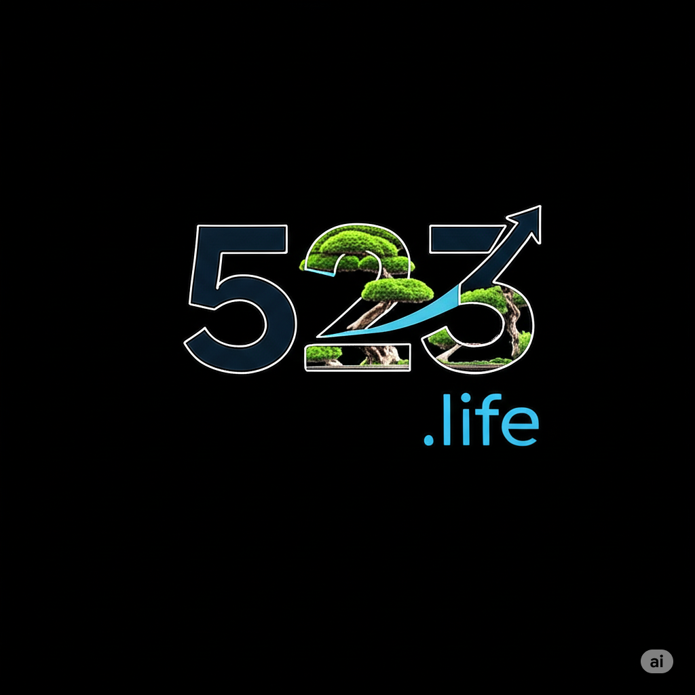

Loading...
Crickets (Dusk with Birds)
Crickets (Dusk with Woodpecker)
Lamington National Park (Australia)
Morning (In The Garden)
Morning (On The River)
Night (Forest Ambience)
Night (Amphibian Chorus)
Ocean (Tidepool Waves)
Ocean (Rising Tide at Sunset)
Ocean (Crashing Waves)
Ocean (Crashing Cave Waves)
Ocean (Beach Waves)
Rain (Gentle on a Tent)
Rain (Easy)
Rain (Easy in Marsh with Birds)
Rain (Medium)
Rain (Heavy with Thunder)
River (Gentle)
River (Easy)
River (Medium)
River (Heavy)
Seaside City Port
Stream (Gentle)
Stream (Easy)
Stream (Medium)
Stream (Wildlife at Dusk)
Thunderstorm (Distant in Forest)
Thunderstorm (approaching)
Waterfall
Winds (Gentle Mountain Breeze)
Winds (Winter Mountain Forest)
❤️
⏮️
▶️
⏭️
Now Playing:
Unknown
-
Unknown
© 2024
523.life